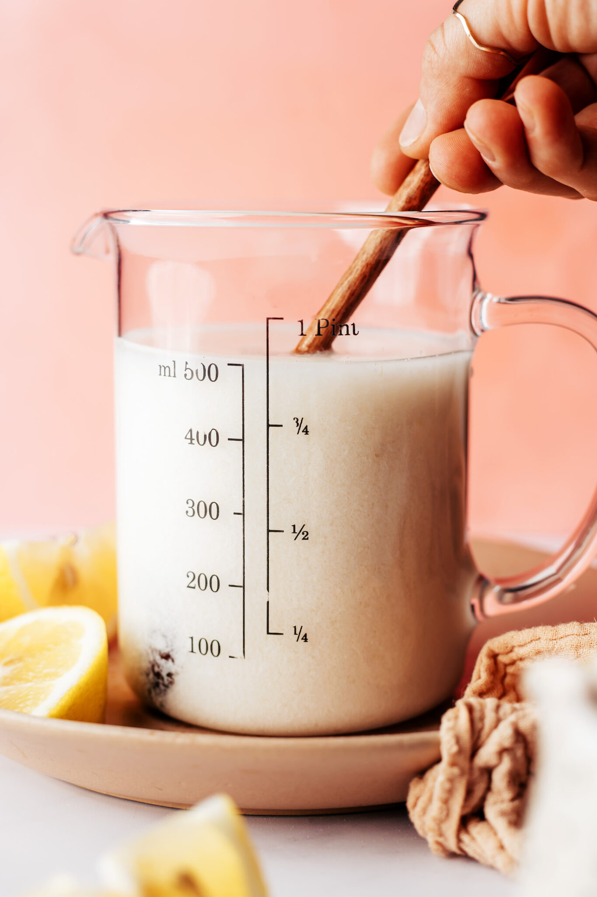

Vegan Buttermilk

Have a favorite recipe that calls for buttermilk, but want to make it vegan or dairy-free?
This recipe is the 2-ingredient, 5-minute solution.
ingredients
- 1 cup unsweetened, plain dairy-free milk
- 1 Tbsp fresh lemon juice or apple cider vinegar
directions
- In a bowl, combine lemon juice with almond milk to make “vegan buttermilk.” Set aside for a few minutes — it should curdle slightly. It won’t thicken like buttermilk, but it has a similar effect in recipes.
- Use in vegan ranch, biscuits (or gluten-free biscuits), or anywhere else that calls for buttermilk. Best when fresh, but it can be stored in the refrigerator for up to 1-2 days and stirred before using.
return home